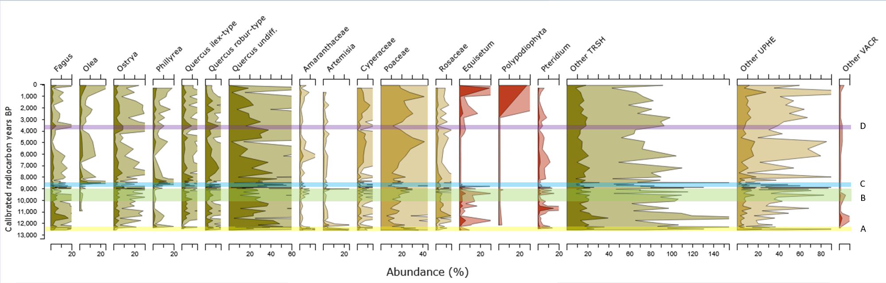

View Prompt, Pollen Diagram & Data
📥 Download CSV (Selected Samples)
📥 Download CSV (All Samples - Complete Record)
📥 Download Prompt (.txt)
📥 Download/Enlarge Diagram

Realistic paleoenvironment reconstruction, 2x2 quadriptych (four panels in one image) with thin borders, same exact camera viewpoint in every panel (same horizon line, camera height, ~35mm lens), landscape of the Roma (central Italy) featuring a small volcanic lake/wetland basin and rolling hills in the background, late spring, natural daylight, high detail. Panel A (top-left) – ~12.5k cal BP (Group 1, Late Glacial): cooler and more open temperate steppe/grassland, abundant grasses (Poaceae), patches of wormwood (Artemisia) and open-ground herbs, sparse woodland with scattered trees, some pioneer conifers/deciduous trees; lakeshore with sedges (Cyperaceae), slightly windy atmosphere, occasional bare soil. Panel B (top-right) – ~10–9k cal BP (Group 2, Early Holocene): milder climate, more continuous temperate deciduous oak woodland (Quercus) with understory, fewer open clearings; wetland fringe with alder (Alnus) and sedges (Cyperaceae). Panel C (bottom-left) – ~8.6k cal BP (Group 2–3): clear shift to Mediterranean elements: slopes with holm oak (Quercus ilex-type) and maquis shrubland including Phillyrea, some wild olive (Olea), mixed with remaining deciduous oaks in cooler spots; woodland–shrubland mosaic. Panel D (bottom-right) – ~3.6k cal BP (Group 3, Mid–Late Holocene): patchwork mosaic of deciduous oaks + holm oak, larger grassy openings, wetland edge with alder (Alnus) and sedges, occasional chestnut (Castanea), overall more open but natural. No modern buildings, no roads, no power lines, no modern agriculture, no text.